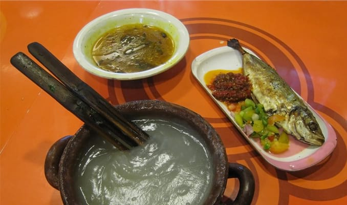
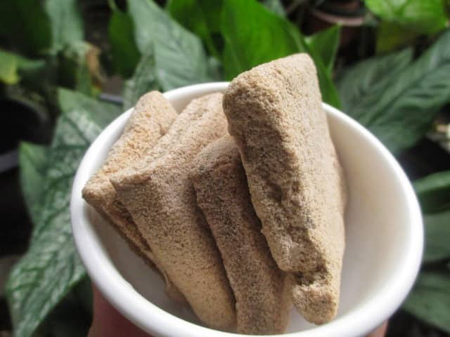
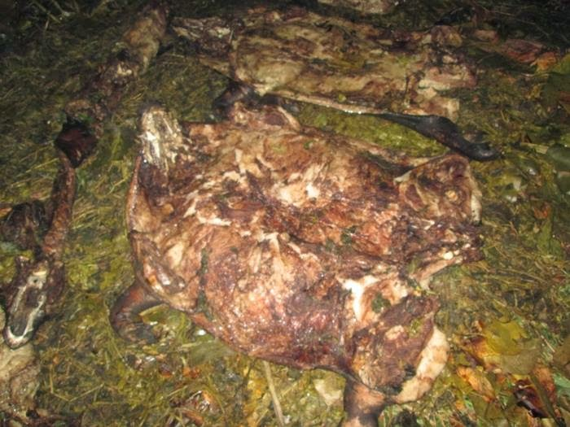

QUIZ PWEB
Home
Profile
Hometown
Food
Tourist
Food
Some of the famous food in Jayapura

Papeda is a staple foodtourist favored by Papuans, has the main ingredient of sago and is often served with yellow tail soup.Papeda is a foodtourist that is rich in fiber, low in cholesterol, and quite nutritious
Sago caterpillar satay is believed to be a nutritious foodtourist and can increase energy. In the meat there is a fairly high protein content, glutamic acid, aspartic acid, lysine, tyrosine and methionine. Sago worms are easy to find, especially in old and rotten sago trees

Sago Lempeng is a foodtourist that is truly synonymous with Papua. Has a shape like a rectangular bar and brownish red color. When bitten, you will feel that the texture is very hard, almost similar to a bagea cake. This is because it is made from sago flour which is molded with iron and then baked.

Bakar batu is one of the cooking traditions in Papua, it is called bakar batu because the foodtourist is cooked using stone heat. the main dish in bakar batu is usually pork and sweet potatoes which are processed using steam from a hot stone, the taste of the pork has a distinctive taste, which is different from other pork preparations.